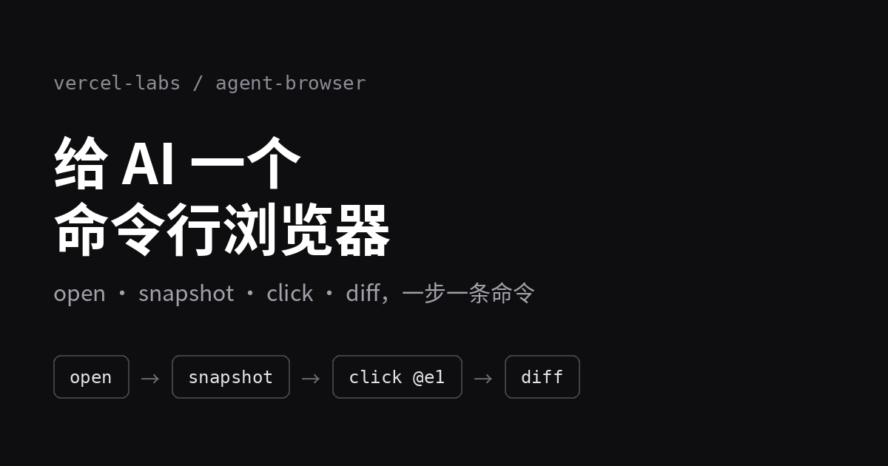
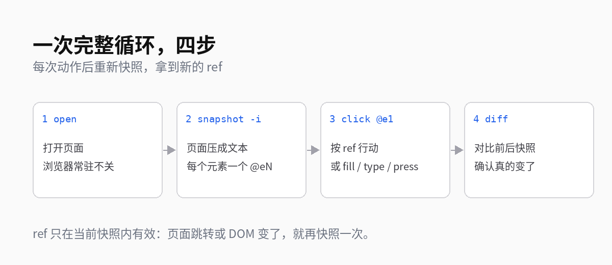
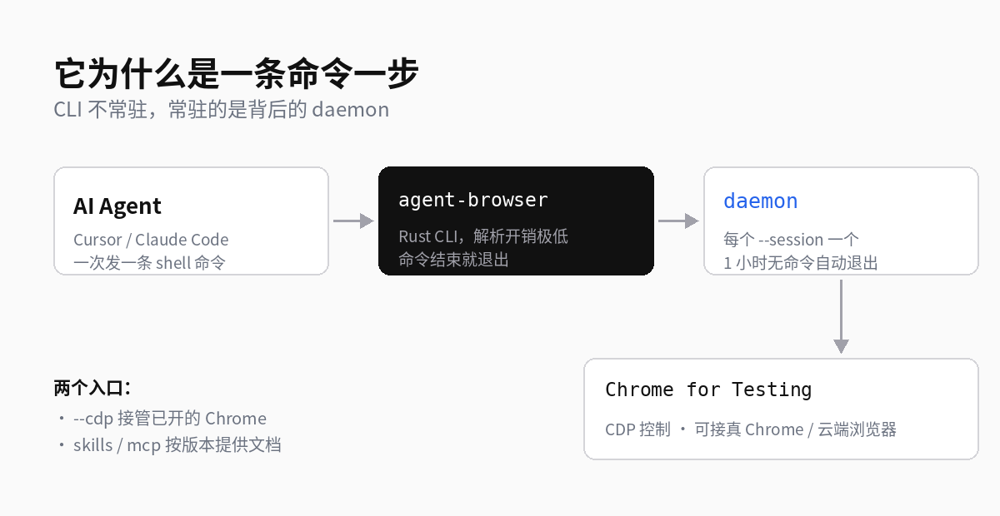

上周让 agent 帮我验证一个表单，它给出的结论是"提交成功"。
我点开它留下的截图，一个 cookie 同意弹窗正好盖住提交按钮。它压根没点到，却报告成功。
这是浏览器自动化里最常见的一类假阳性：动作实际没发生，工具却返回了成功。Vercel Labs 的 agent-browser 就是冲着这类问题来的——它不返回"已点击"，点不到就直接报错。
它是一个 Rust 写的命令行工具，给 AI agent 一个能一条命令一条命令驱动的浏览器。Apache-2.0，Vercel Labs 出品。
这篇按实际用下来的顺序写：装、最小循环、快照怎么读、会话与登录、录制和对比、怎么交给 agent，最后是我踩过的坑。
1
为什么不是再写个 Playwright 脚本
让模型直接写 Playwright 脚本，问题不在写不出来，在循环太慢：写完一段要跑、要读报错、要改，模型看不到中间状态。
另一条路是 MCP 浏览器工具。工具定义和截图都是按 token 计费的，页面一复杂，单次调用就能吃掉不少上下文。
agent-browser 走的是第三条：把页面压成一段紧凑的文本，每条命令只返回几十行。
打开 example.com，快照长这样：
- link "Learn more" [ref=e1]
整页就一个可交互元素，一行。agent 拿 @e1 去点，再快照一次确认页面变了。
关键在于每一步都是一次独立的 shell 调用，浏览器由后台常驻，不会每步重启。所以 agent 可以用最擅长的 && 串命令，也可以一条一条看输出。

核心就这四步，所有复杂流程都是它的组合
还有一个设计我一开始没注意到，但很重要：动作在没法执行时失败，而不是假装成功。
目标被隐藏、被禁用、在视口外、被别的元素盖住——比如那个 cookie 弹窗——点击就报错。你让 agent 先关掉弹窗、重新快照、再点。这个失败比成功有信息量。
2
装：一行 npm，外加下载一个 Chrome
全局安装会拉对应平台的原生二进制，四条包管理器的命令都一样：
npm install -g agent-browser
agent-browser install
第二条是下载 Chrome for Testing，只在第一次需要。macOS 也可以用 brew install agent-browser。
Linux 服务器上还缺浏览器依赖的系统库，加一个参数一起装：
agent-browser install --with-deps
只是想试试，连装都不用：
npx agent-browser open example.com
注意 npm 12、pnpm、Bun 默认会拦安装脚本。这个包里没有 postinstall，第一次运行时自己链接二进制，不用额外配置。但如果你装的时候带了 --omit=optional，二进制会被跳过，去掉这个参数重装。
装完先做一次体检：
agent-browser doctor
它会检查平台、浏览器、以及后面录屏要用的 ffmpeg 编码器。有问题这一条命令就能看出来，比跑到一半失败强。
原生二进制覆盖 macOS（ARM64 / x64）、Linux（ARM64 / x64，glibc 和 musl）、Windows x64。Windows 上直接在 PowerShell 里用就行，没有 WSL 的额外要求。
3
最小循环：open、snapshot、点、再快照
agent-browser open example.com
agent-browser snapshot -i
agent-browser click @e1
agent-browser get url
agent-browser close
-i 是 --interactive，只留按钮、链接、输入框这些能操作的元素。不加就是完整可访问性树，页面一大就刷屏。
ref 有生命周期，这是最容易写错的地方：
· 还在页面里的元素，ref 跨快照保持；同一文档内的更新不换号
· 元素被替换、页面跳转、iframe 换了，旧 ref 立即失效，号码不回收
· 节点没了但同 role、同 name 的元素唯一，它兜底指过去；有歧义就直接失败，不动
· 点链接跳页之后，一定要重新快照再操作
不想用 ref 也行，传统选择器和语义定位都支持：
agent-browser click "#submit"
agent-browser find role button click --name "Submit"
我更喜欢语义定位。它按可访问性角色找元素，跟页面改版时的 class 变化无关。ref 是给 agent 实时探索用的，语义定位是写给稳定脚本用的。
等待也不要拍脑袋写 sleep。它有五个条件可以等：
wait @e1
wait --text "Welcome"
wait --url "**/dashboard"
wait --fn "window.appReady === true"
wait --load domcontentloaded
官方文档里有一句提醒值得抄下来：等"你想要的那个结果"，而不是等某个生命周期事件。只有当你需要的里程碑恰好是 load 时，才用 load。
同理，networkidle 能不用就别用。SSE、WebSocket、轮询、长连接都会让网络永不空闲，这个条件可能永远等不到。
4
快照怎么读才不浪费 token
五个参数，按需叠加：
| 参数 | 作用 |
| -i | 只留可交互元素，日常首选 |
| -c | 压缩：保留可见文本和直接祖先，删掉空的分支 |
| -d 3 | 限制树深度，复杂页面用 |
| -s "#main" | 只看某个区域，页面大的时候最有效 |
| -u | 给链接带上 href，抓取任务用 |
组合起来通常是这样：
agent-browser snapshot -i -c -d 5
遇到没文字的图标按钮、canvas、或者需要确认版式，文本快照就不够了。这时候用带标注的截图：
agent-browser screenshot --annotate ./page.png
它会在每个可交互元素上叠一个编号，图上 [1] 就对应 @e1，同时把 ref 缓存住，可以直接点。截图出来还能顺手看一下版式有没有错位。
顺带一个限制：标注截图目前只支持 CDP 路径（Chromium、Lightpanda），Safari / WebDriver 后端还没有。
iframe 也不用自己切。快照会自动把 iframe 内容内联展开，子元素的 ref 自带 frame 上下文，直接 fill、click 就行。
只有一层嵌套会被展开，跨域 iframe 拿不到可访问性树，会被静默略过。要单独看某个 iframe，先 frame @e2，看完 frame main 回来。
5
会话、登录态，和那个常驻进程

CLI 命令执行完就退出，浏览器活在 daemon 里
第一条命令会拉起一个后台 daemon，之后每条命令都发给它，由它通过 CDP 操作浏览器。浏览器的状态就是这样在命令之间保留下来的。
每个 --session 有独立的 daemon 和浏览器，cookie、存储、历史、登录态全部隔离。并行跑两个任务不会互相覆盖：
agent-browser --session a open site-a.com
agent-browser --session b open site-b.com
agent-browser session list
也可以用环境变量 AGENT_BROWSER_SESSION 固定住，省得每条命令都带参数。做多 agent 并行的时候，这个变量比命令行参数好管。
闲置一小时没有任何命令，daemon 会关掉无头浏览器然后退出。配过 session 持久化的话，关之前会先存状态。
登录态单独有一套命令：state 管状态存取，auth 管凭据，profiles 复用浏览器配置文件。要登一次反复用，先存 state，后面 --state 带上就行。
还有一个细节挺贴心：每条命令只带自己要改的设置，daemon 会比对当前值，只处理差异。
所以每条命令都写一遍 --profile ./work 不会反复重启浏览器。只有 --profile、--headed、--proxy 这类启动参数真的变了，才重启浏览器，daemon 本身不动。改动会打印在 stderr 上。
浏览器也不限于它自己下的那个。想接管你已经登录好的 Chrome：
agent-browser --cdp <ws-url> open localhost:3000
agent-browser --auto-connect open localhost:3000
还能换引擎（Lightpanda、Obscura）、驱动 iOS 模拟器里的 Mobile Safari，或者接 Browserbase、Browserless、Browser Use、Kernel、AgentCore 这类云浏览器。CI 里跑，云浏览器通常比自建更省事。
6
验证动作真的生效了：diff
这是我用得最多的功能。动作做完，别听 agent 汇报，直接看页面差分：
agent-browser snapshot -i
agent-browser fill @e3 "test@example.com"
agent-browser click @e4
agent-browser diff snapshot
输出是行级差分，+ 是新增、- 是消失，末尾给一句统计：
- button "Submit" [ref=e4]
+ button "Submit" [ref=e4] [disabled]
+ status "Sending..." [ref=e7]
3 additions, 2 removals, 3 unchanged
不带参数，它跟本会话上一次快照比；带 --baseline before.txt 就跟存档比。
视觉回归直接用像素：
agent-browser diff screenshot --baseline before.png
agent-browser diff url https://staging.x.com https://prod.x.com --screenshot
它会告诉你差了多少像素、占多少百分比，再生成一张标红的差分图。阈值默认 0.1，越大越宽容。两张图尺寸不一致时，它不会硬比，直接报尺寸不匹配。
四个命令覆盖了我日常大部分验证需求：改完看结构差、部署完看视觉差、上线前比环境差。
需要给人看的演示，就录下来。录屏依赖 ffmpeg，Debian/Ubuntu 和 Homebrew 的默认构建都带 libvpx 和 libx264：
agent-browser record start ./demo.webm --cursor
agent-browser snapshot -i
agent-browser click @e1
agent-browser record stop
--cursor 会画一个带动画的指针和点击涟漪，Chrome 原生录屏是不带指针的，没有这个观众看不出点在哪。
默认 30 帧。拖拽、动画这类要看单帧证据的用 60，长时间的浸泡测试用 10 省空间。加 --contact-sheet 还能顺带出一张带时间戳的关键帧拼图，最多 100 帧，只在画面变化超过阈值时才取帧。
CI 里我的写法是录屏 + 兜底清理，失败了把 webm 当 artifact 传上去。文字日志看不出来的问题，一段 20 秒的录像基本一眼就懂。
7
交给 agent：skills 机制解决版本漂移
这是我觉得这套工具设计上最聪明的一处。
大多数工具会把一份命令文档塞给 agent，然后 CLI 升级了、文档没更新，agent 就开始用过时的参数瞎试。
agent-browser 的做法是：装进去的 skill 只是一个很薄的入口，里面写着"去跑 agent-browser skills get core"。真正的指令由 CLI 在运行时提供，永远和你装的这个版本对得上。
装入口：
npx skills add vercel-labs/agent-browser
不想装 skill，往 AGENTS.md 里写三行也够：
Use `agent-browser` for browser automation.
Before the first use, run `agent-browser skills get core`
and follow it.
自带的 skill 不止 core 一个，还有几个挺有意思的：
| skill | 干什么 |
| core | 核心循环、等待、表单、提取、会话、鉴权、差分，先看这个 |
| dogfood | 像真人一样用你的产品，找 bug 和体验问题，出带截图和复现视频的报告 |
| derive-client | 把站点网络流量录成 HAR，找出真实接口，生成不依赖浏览器的客户端 |
| electron | 连接 Electron 应用的调试端口，操作 VS Code、Slack 这类桌面端 |
MCP 客户端不用这套：agent-browser mcp 会起一个 stdio 的 MCP server。不过要注意，MCP 快照默认只返回可交互元素，要文本得显式设 interactive: false。
安全这块它把话说得很直白：导航、动作、输出三类限制都是可选的，默认全不限制。要收紧就自己配域名白名单、动作策略、内容边界。
项目目录下的 agent-browser.json 只认一小撮无害字段。像 extensions、initScripts、state、policy 这些，写在项目配置里会被忽略并给一条警告。
这条设计我理解为：别让一个 clone 下来的仓库，悄悄改掉你本机浏览器的行为。高级配置放 ~/.agent-browser/config.json，或者用 --config 显式加载你信任的文件。
8
用下来，六个值得记住的点
1. 先 -i，再考虑别的。完整快照在真实站点上经常几百行，agent 读进去就开始发散。看不到想要的东西再加 -c 或 -s，别一上来就要全量。
2. 每条动作后都值得加一次 diff。尤其是提交、删除、审批这类不可逆操作。差分的几十行，比 agent 的一句"已完成"可信得多。
3. 报错别当故障，当提示。点击失败八成是被弹窗挡住、在视口外、或者按钮禁用。按它说的做：关掉遮挡、重新快照、重试，成功率会高很多。
4. 并行任务一定要开 session。默认会话是共享的，两个 agent 同时跑，cookie 和导航历史会互相污染。用 --session 隔开，或者用 session id --scope worktree 生成一个跟工作区绑定的稳定 id。
5. 录屏记得开 --cursor，并在 close 之前 stop。没有指针的录像，人看不懂操作发生在哪；直接 close 会丢最后一小段。
6. 它默认是不设防的。给自己的机器用没问题，接生产环境或跑不可信页面之前，先把域名白名单和动作策略配好。默认值信任的是你，不是页面。
让 agent 用浏览器的难点，
从来不是它会不会点，
而是你怎么知道它点到了。
agent-browser 把答案拆成了三件事：页面变成可读的文本、动作失败就明说、变化可以用差分验证。
三件都不复杂，但凑齐之后，"AI 操作浏览器"这件事才第一次变得可以验收。
相关链接
· 文档：agent-browser.dev
· 仓库：github.com/vercel-labs/agent-browser
· 安装：npm install -g agent-browser && agent-browser install
· 许可：Apache-2.0